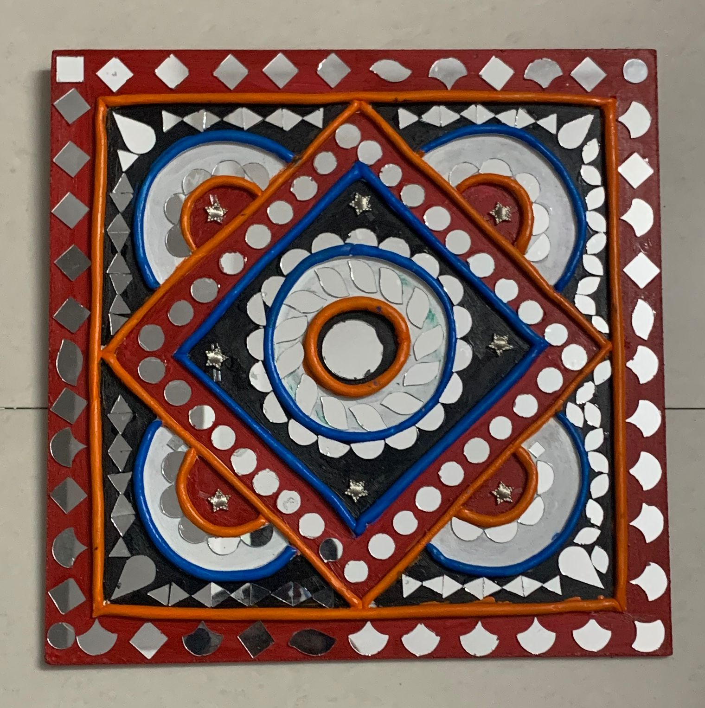

Assignmements

What is art and carft
Art and Craft refer to two forms of creativity. Art is often seen as a form of personal self-expression, while craft refers to the creation of handmade, tangible objects, often with a functional or decorative purpose.